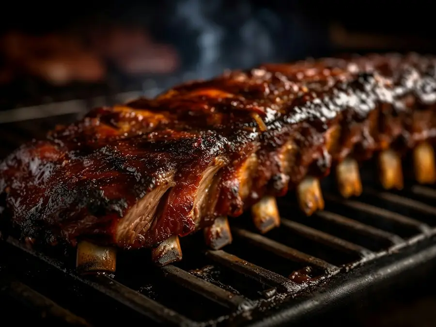
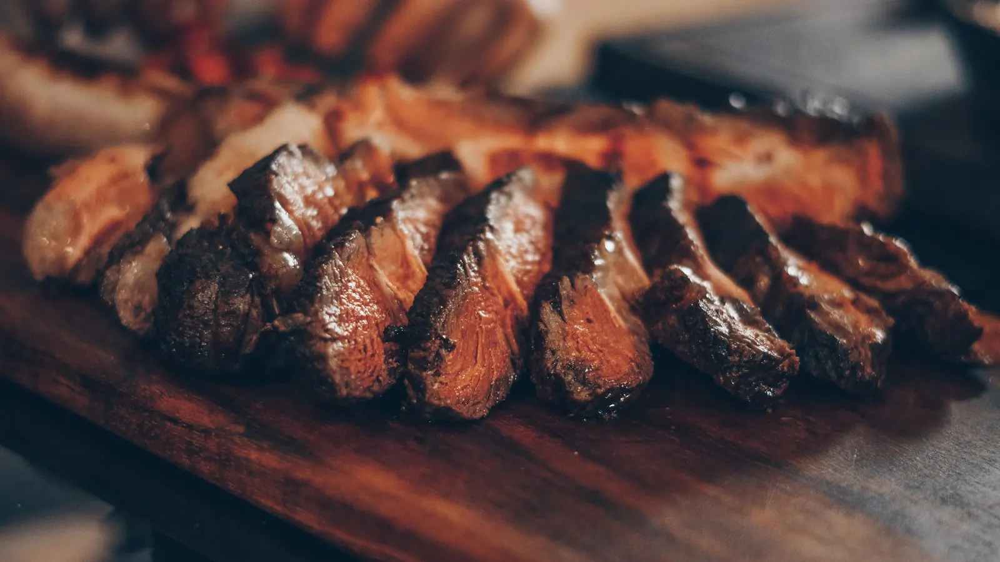
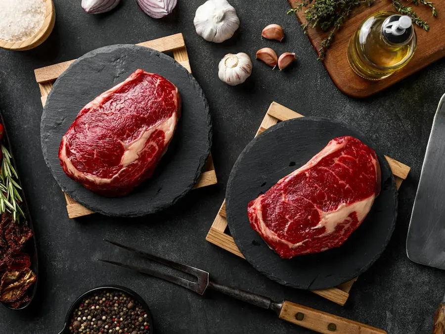
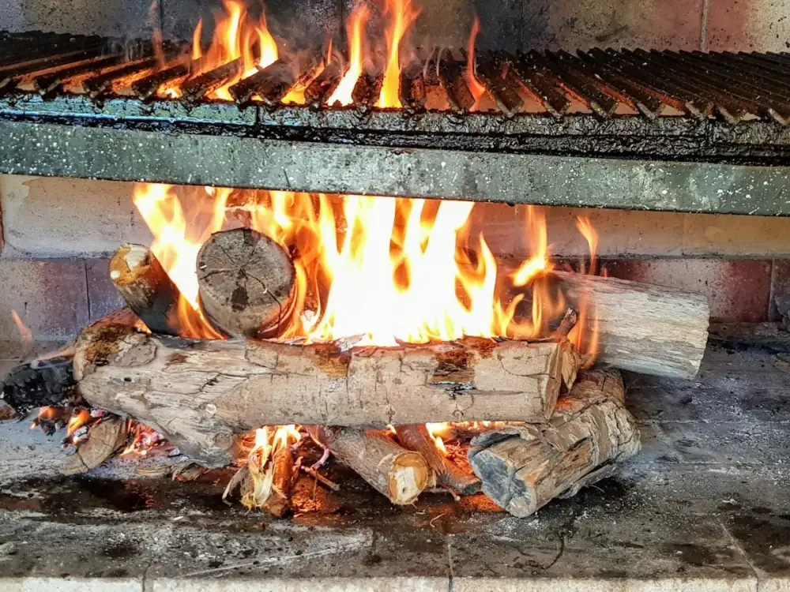
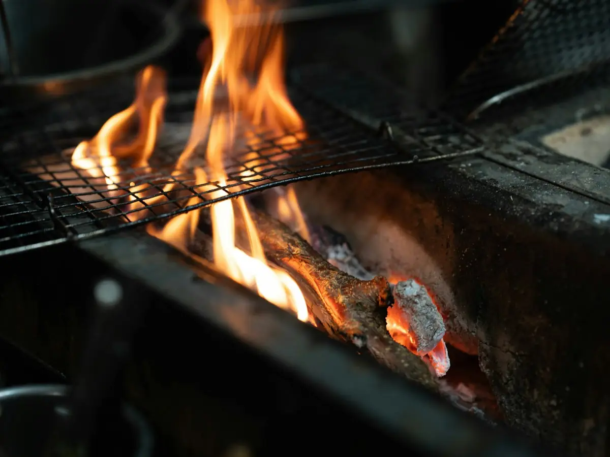
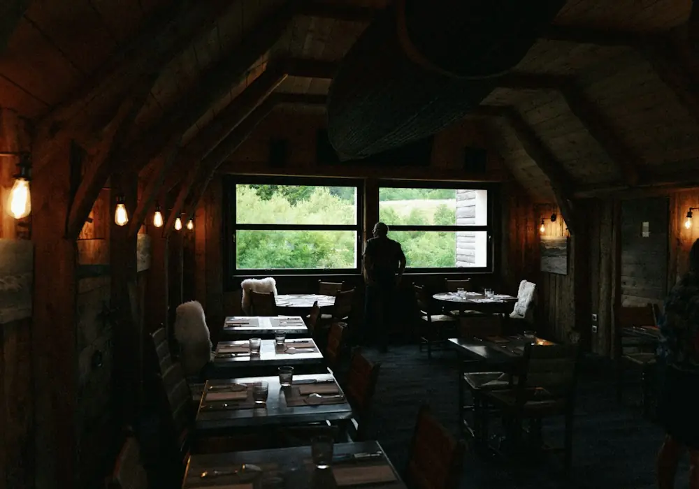
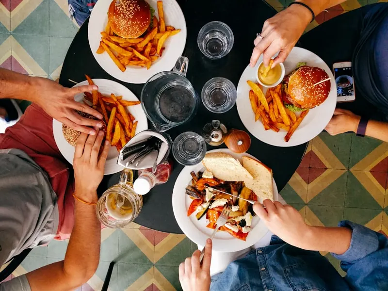

Costillar a fuego lento
$24.90Cuatro horas sobre algarrobo. Llega entero. Se desarma con el tenedor. Fin del debate.
Cortes madurados 21 días. Costillar cuatro horas sobre algarrobo. Sin microondas, sin atajos, sin disculpas. La misma esquina de Urdesa desde hace dieciocho años.
Martes a domingo · Urdesa Central · Valet desde las 19:00


La carne madura en nuestra cámara propia antes de ver el fuego. Ni un día menos. Por eso el ojo de bife se corta con el tenedor.

Prendemos la leña cada mañana y esperamos la brasa. Nada de gas, nada de carbón de bolsa. El humo es parte de la receta.

El parrillero saca cada corte cuando está listo, no cuando hay apuro. Llega a tu mesa entero y se corta frente a ti.
Las guarniciones cambian con la temporada. Los cortes y el chimichurri, jamás. Precios en dólares, IVA incluido.

Don Aníbal Sarmiento llegó de Mendoza en 2005. Dos años después abrió acá, con seis mesas y una parrilla que le prestó un vecino. Hoy manda su hija Renata. El chimichurri sigue saliendo de la receta que él trajo escrita a mano.
Carne de tres ganaderías de la cuenca del Guayas. Cámara propia. Carbón encendido a las 10:30 de la mañana, todos los días. Dieciocho años igual. No pensamos cambiar.
«Si la brasa está apurada, se nota en el plato.»

«Pedimos el costillar con dos días de anticipación para el cumpleaños de mi papá. Llegó entero a la mesa. Éramos nueve y nadie habló de otra cosa en toda la semana.»
«Traigo clientes de la oficina hace años. El ojo de bife sale igual siempre y el mesero se acuerda de cómo lo pido. Eso ya no se consigue.»
«La provoleta y las mollejas valen el viaje solas. Un viernes sin reserva esperamos 25 minutos en la barra. Llamen antes. Vale la pena igual.»
Reservas hasta con 30 días de anticipación. Grupos de más de ocho: confirma por WhatsApp.
| Martes a jueves | 12:30 – 15:30 · 19:00 – 23:00 |
|---|---|
| Viernes | 12:30 – 15:30 · 19:00 – 00:00 |
| Sábado | 12:30 – 00:00 |
| Domingo | 12:30 – 17:00 |
| Lunes | Cerrado (descansa la brasa) |
WhatsApp de 10:00 a 22:00. Dinos cuántos son y a qué hora llegan. Nosotros prendemos el fuego.